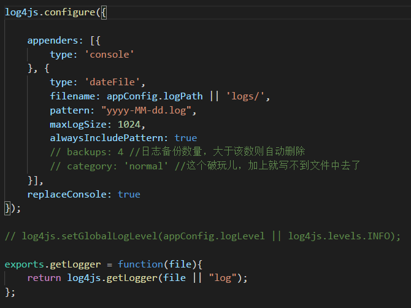

#Nodejs中间件
一.log4js的使用非常简单:
1.安装包(npm install log4js)
2.创建日志目录(./logs/log_fie/)
3.添加一个日志输出规则的配置文件(log4js.json)(这个也是有缺省的,但往往缺省配置是不满足使用需求的)
4.代码中加载log4js,并将配置文件获取到调用一下配置方法(log4js.configure(cfg.json))
5.写日志log4js.getLogger(‘log_test’).debug(“随便写日志啦!!!”)
二.Log4js的配置详解
1.appenders属性
appenders是配置文件的一级属性:它的作用是配置输出源.后续我们真正输出日志的对象就是appenders的下属子项标注的输出 源appenders的子属性.
1.1 category配置
category翻译过来叫做种类.实际上更简单的理解成这个写日志员工的名字.
当我们有多个员工时就依靠与这个字段来区分,前面例子中,写日志前有这样一行code:
log4js.getLogger(‘log_file’).debug(…);
这个getLogger()的参数就是category的配置内容,可以是任意字符串
1.2 type配置
type字段是控制日志输出对象的是什么类型的,比较常用的配置有三个:
a.”type”:”console”:
type配置为console表示控制台,在此种配置下,往往用于调试时.细节参见2.replaceConsole中的描述.
b.”type”:”file”:
type配置为file表示日志输出为普通文件,在此种配置下,日志会输出到目标文件夹的目标文件中,并会随着文件大小的变化自动份文件.
该模式下的具体生成文件方法:
相关有效配置包含:maxLogSize,backups,filename
相关无效配置包含:pattern,alwaysIncludePattern
c.”type”:”datefile”
type配置为datefile表示是输出按时间分文件的日志,在此种配置下,日志会输出到目标目录下,并以时间格式命名,随着时间的 推移,以时间格式命名的文件如果尚未存在,则自 动创建新的文件.
该模式下的具体生成文件方法:
相关有效配置包含:pattern,alwaysIncludePattern,filename
相关无效配置包含:maxLogSize,backups
1.3 filename配置
a.filename是一个目录加上文件名,路径就是日志文件存储的路径.
b.此路径可以是相对路径也可以绝对路径,当是相对路径时,是相对于工程根目录.
c.无论是相对路径还是绝对路径,路径过程中的所有文件夹必须事先手动创建好,log4js不会自动创建,如路径不存在则会报错.
d.最后的文件名就是输出文件的名字模版,真实的名字会一定的修改,
d1:type:datefile 时会加上时间标签,如 [log-2015-01-24 , log-2015-01-25]
d2:type:file时 如果文件过大,份文件后会增加一个编号标签. [log.1 log.2 log.3 …]
1.4 maxLogSize配置
这个只在type:file模式有效.表示文件多大时才会创建下一个文件,单位是字节.实际设置时具体的值根据业务来定,但是不推荐 大于100Mb.
1.5 pattern配置
这个只在type:datefile模式有效.表示一个文件的时间命名模式.在生成文件中会依照pattern配置来在filename的文件结尾 追加一个时间串来命名文件.上个例子:
配置文件内容:
1
2
3
4
5
6
7{
"category":"log_date",
"type": "dateFile",
"filename": "./logs/log_date/date",
"alwaysIncludePattern": true,
"pattern": "-yyyy-MM-dd-hh:mm:ss.log"
}
此时生成的文件名就是date-2015-01-24-14:24:12.log
pattern精确到ss(秒)就是一秒一个文件,精确到mm(分)就是一分一个文件,一次类推:hh(小
时),dd(天),MM(月),yyyy(年),yy(年后两位),注意大小写!
pattern是有默认配置的,默认配置是”.yyyy-MM-dd”
1.6 alwaysIncludePattern:
这个只在type:datefile模式有效.
这个是个开关配置 ture(默认值)是开启pattern,false是不开启pattern,不开启时datefile文件将无任何时间后缀,也不会 分文件.
1.7 backups配置
这个只在type:file模式有效,表示备份的文件数量,如果文件过多则会将最旧的删除.
type:file模式下log4js的命名规则:正在写的文件就叫filename中配置的文件名,文件过大后会追加数字 例如 log.1 log.2 log.3 , 直至文件数量达到backups时会把最旧的删除.
当创建一个新的文件时,log4js会把所有之前的文件的.数字编号都顺延一位,最后将刚刚出现的大文件后面追加.1; 这种模式下 应该注意大文件拷贝时对命名的影响,所以maxLogSize不要设置过大.
2.replaceConsole配置
这个配置是表示是否替换控制台输出.当配置文件中配置了appenders中配置了type:console的员工,并且 replaceConsole:true时,代码中控制台输出(console.log console.error)的内容将会以log4js格式输出到控制台中.
再说一个很实用的小技巧:log4js的时时调试输出:
当我们把实际生产环境的log4js.json配置好后,在调试阶段,日志会输出到各个文件中,试试调试起来很不方便,那么我们可以将各个日志输出员工的type配置为console,这样日志信息就会全都汇总到控制台输出.
此时如果再添加一个如下日志员工配置,则代码中nodejs系统提供的console.log也会输出到控制台中.1
2
3
4{
"type":"console",
"category":"console"
}
其中category的名字必须叫console,否则无效,
replaceConsole:ture时如果不加这行,nodejs系统提供的console.log()输出的内容将不会显示
3.levels配置
levels配置也是一个一级属性,它控制着日志的输出级别.在发布的程序,如果很稳定,一些不重要的日志是需要隐去的,但当调试阶段或者环境异常时我们需要重现所有流程,就需要全面的日志.
levels的结构中配置着若干个属性,一般与appenders中的员工对应,其中属性名是appenders中的员工名(也就是category的值),属性值是一个表示等级的字符串.
log4js的levels配置共分为8个等级(也就是日志等级),由低到高分别为:ALL TRACE DEBUG INFO WARN ERROR FATAL OFF.
只有大于等于日志配置级别的信息才能输出出来.
三.Log4js的常见问题和小技巧
配置文件的格式设定
配置文件其实就是一个js对象,json,js,或者自己通过各种set方法赋值出来一个都一样
最开始说需要将配置文件与配置文件log4js.json与log4js模块关联,也就是调用configure()函数加载配置,其实此时就是需 要一个JavaScript对象而已,既然如此,我们完全可以把配置文件写成js格式的文件,类似于这样的:
module.exports = { … 这里面的内容就是上面贴的json啦};
这种模型的优势是如果配置中有动态信息,可以在配置中添加函数,比如用文件名以pid命名,在配置时可以动态获取pid然后字符 串拼接到filename上.另一个优势是json不支持注释,写成js后可以添加注释.
下面是我在项目里面log4js的配置文件
